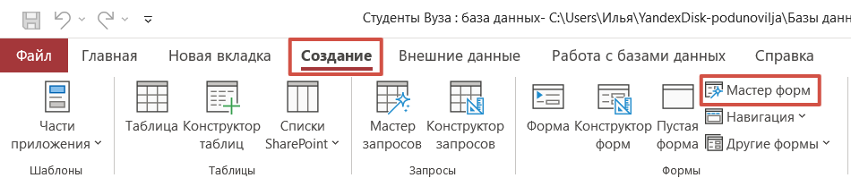
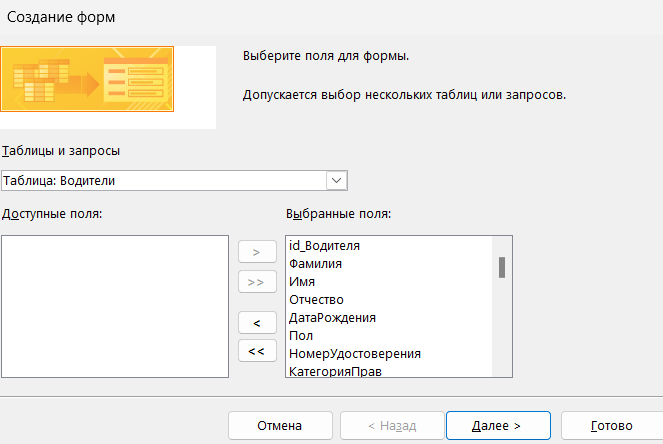
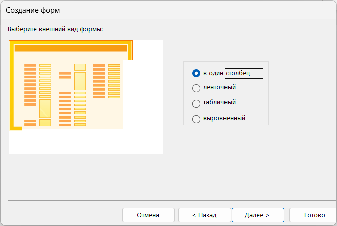
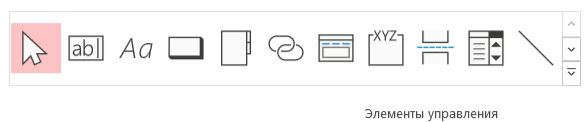
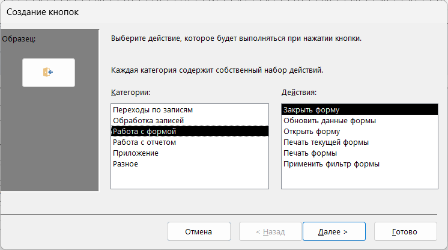
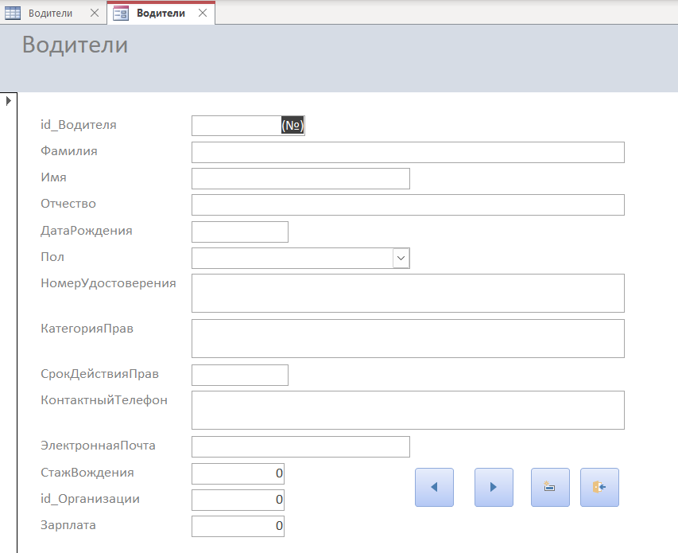
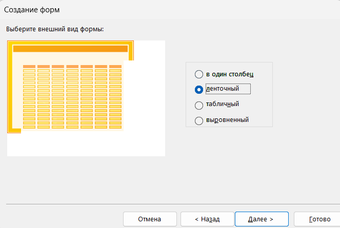
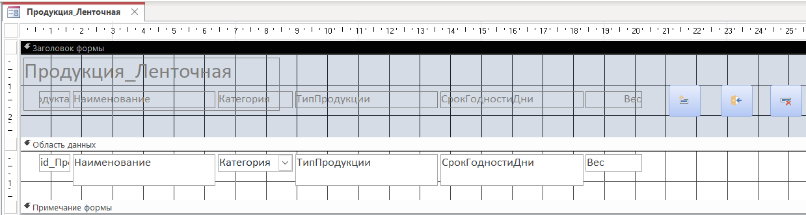
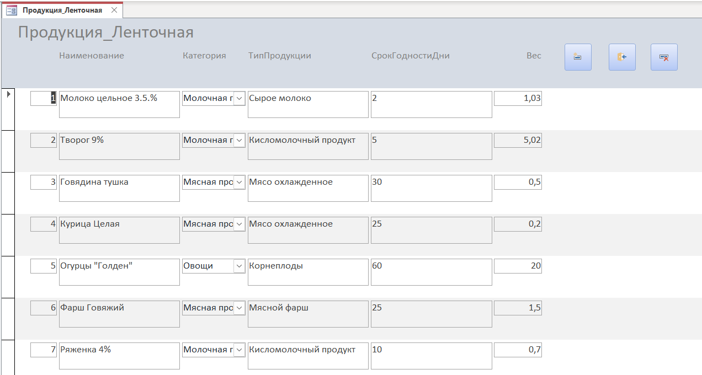

Создание таблиц и определение связей
Теоретическая часть
Формы – это интерфейс для удобного взаимодействия пользователя с базой данных. Они позволяют:
— Вводить и редактировать данные без работы напрямую с таблицами.
— Отображать связанные данные из нескольких таблиц.
— Контролировать ввод с помощью валидации и подстановок.
Типы форм:
1. Простая форма – это базовый тип интерфейса, предназначенный для детального отображения и редактирования одной записи из таблицы или запроса. Она предоставляет пользователю удобный поэлементный доступ к данным, где каждое поле отображается отдельно с рядом стоящими подписями.
2. Ленточная форма – представляет собой данные в табличном формате, аналогично виду таблиц в Access, но с расширенными возможностями настройки внешнего вида и поведения. Она отображает сразу несколько записей в виде строк с колонками, что позволяет наглядно представить множество записей.
3. Форма с подчиненной формой – это составная форма, состоящая из главной формы (отображающей основную запись) и одной или нескольких подчиненных форм (показывающих связанные записи). Связь между формами поддерживается автоматически через ключевые поля.
Практическая часть
1. Откройте базу данных «Логистика».
2. Для заполнения таблиц данными нам необходимо создать формы. На вкладке «Создание» выберите пункт «Мастер форм»

3. В появившемся окне выбираем любую таблицу из предложенного списка и переносим все поля в правую строну

4. Нажимаем на кнопку «Далее» и выбираем внешний вид формы «В один столбец».

5. Необходимо сделать формы по каждой таблице, выбирая нужные поля и указывая внешний вид «В один столбец».
6. Теперь нам нужно добавить элементы управления. В режиме конструктора переходим в раздел «Заголовок формы» и добавляем любую надпись через панель элементов.

7. В этом же разделе находим элемент «Кнопка»
8. Добавляем на форму 4 кнопки. Категории:
9. Переход по записям – Предыдущая запись, Следующая запись;
10. Обработка записей – Добавить запись;
11. Работа с формой – Закрыть форму

12. Также нам нужно нажать правой кнопкой мыши на форму и выбрать «Свойства» и отключить ненужные элементы:
— Область выделения – Нет;
— Кнопка закрытия – Нет;
— Кнопка оконного меню – Нет.

13. Теперь создадим форму используя ленточный тип. Для этого выделяем таблицу «Продукция» и нажимаем «Создание» далее «Мастер форм» и выбираем внешний вид формы ленточный

14.Нажимаем на «Далее» и у нас создается форма с Ленточным видом.
15. Теперь нам необходимо добавить кнопку для добавления записи в таблицу, а также для закрытия формы.
16. Так как у нас форма ленточного типа кнопки переключения не нужны, но для большего функционала мы добавим кнопку удаления записей из таблицы, поэтому переходим в конструктор формы «Продукция» и в заголовке размещаем кнопки для Добавления, Удаления и Закрытия формы.


17. Создайте форму в один столбец для таблицы «ЭтапыДоставки» и «Заявки»
18. Создайте форму ленточного типа для таблицы «Местоположения» и «Транспорт»
19. Заполните данными таблицы через формы (10–15 записей)
20. Сохраните и закройте проект